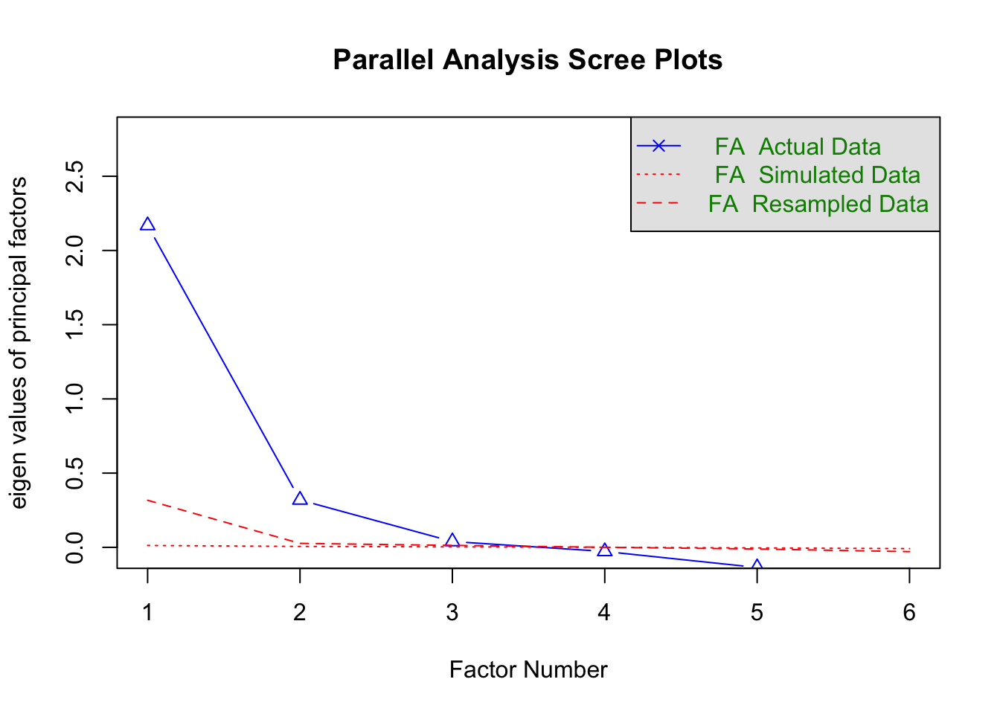

Wave 11 of the British Election Study Internet Panel contains the most detailed battery on national identity across the entire series, providing a unique opportunity to distinguish empirically between ethnic and civic conceptions of British nationalism. This wave includes eight items measuring beliefs about who counts as “truly British,” with 2 indicators reflecting ethnic criteria (being born in Britain and being Christian) and four reflecting civic criteria (speaking English, respecting British laws, following British customs, and feeling British). Living in Britain and holding British citizenship were excluded from the analysis due to the lack of a clear theoretical background to add them into civic/ethnic criteria. These items, collected simultaneously in a single fieldwork period, allow for a consistent latent-structure analysis free from cross-wave measurement noise.
The goal of this brief report is to examine the empirical structure of these nationalism indicators in Wave 11, assess whether they cluster into distinct latent dimensions, and extract reliable factor scores. These scores will be used in subsequent analyses to test how different forms of national identity interact with economic conditions in shaping attitudes toward immigration.
The 2 ethnic nationalism items: born in Britain, and Christian, exhibit moderate to strong positive correlations with one another (0.27 to 0.7), indicating that they tap a shared underlying construct centered on origin-based and ascriptive membership criteria. Similarly, the four civic nationalism items: speak English, follow British customs, respect British law, and feel British, also correlate moderately among themselves (0.39 to 0.5), reflecting a distinct dimension based on behavioral and norms-based criteria. Cross-cluster correlations are consistently weaker: ethnic items correlate with civic items in the 0.17 to 0.41 range, suggesting related but clearly separable constructs. Overall, the correlation structure shows two internally cohesive clusters with weaker between-cluster associations, providing strong initial evidence for a two-dimensional latent structure that distinguishes ethnic from civic conceptions of national identity in the BES wave 11.

Parallel analysis suggests that the number of factors = 3 and the number of components = NA
Parallel analysis of the revised item set suggests the presence of up to three factors, as the first three observed eigenvalues marginally exceed those obtained from simulated random data. However, inspection of the scree plot reveals a clear and steep drop after the second factor, with the third eigenvalue lying very close to the noise threshold and contributing negligible additional variance. Given the limited number of indicators, the small magnitude of the third eigenvalue, and strong theoretical expectations distinguishing ethnic and civic conceptions of national identity, the parallel analysis is best interpreted as supporting the retention of a two-factor solution. Accordingly, subsequent analyses focus on two latent dimensions, while treating any additional factors suggested by the parallel analysis as statistical noise rather than substantively meaningful constructs.
Factor Analysis using method = ml
Call: fa(r = nat11, nfactors = 2, rotate = "oblimin", fm = "ml")
Standardized loadings (pattern matrix) based upon correlation matrix
ML1 ML2 h2 u2 com
britBornHereW11 0.11 0.63 0.48 0.52 1.1
britChristianW11 -0.09 0.67 0.40 0.60 1.0
britSpeakEnglishW11 0.70 0.02 0.50 0.50 1.0
britCustomsW11 0.46 0.30 0.44 0.56 1.7
britRespectLawW11 0.75 -0.09 0.50 0.50 1.0
britFeelBritishW11 0.44 0.29 0.41 0.59 1.7
ML1 ML2
SS loadings 1.59 1.14
Proportion Var 0.26 0.19
Cumulative Var 0.26 0.45
Proportion Explained 0.58 0.42
Cumulative Proportion 0.58 1.00
With factor correlations of
ML1 ML2
ML1 1.00 0.51
ML2 0.51 1.00
Mean item complexity = 1.3
Test of the hypothesis that 2 factors are sufficient.
df null model = 15 with the objective function = 1.39 with Chi Square = 169757.1
df of the model are 4 and the objective function was 0.01
The root mean square of the residuals (RMSR) is 0.02
The df corrected root mean square of the residuals is 0.03
The harmonic n.obs is 29137 with the empirical chi square 245.09 with prob < 7.4e-52
The total n.obs was 122372 with Likelihood Chi Square = 1809.67 with prob < 0
Tucker Lewis Index of factoring reliability = 0.96
RMSEA index = 0.061 and the 90 % confidence intervals are 0.058 0.063
BIC = 1762.81
Fit based upon off diagonal values = 1
Measures of factor score adequacy
ML1 ML2
Correlation of (regression) scores with factors 0.87 0.83
Multiple R square of scores with factors 0.76 0.68
Minimum correlation of possible factor scores 0.52 0.37
A two-factor exploratory factor analysis estimated by maximum likelihood with oblimin rotation provides a coherent representation of the revised national identity battery. The two factors have SS loadings of 1.59 and 1.14, explaining 26% and 19% of the total variance, respectively, and 45% cumulatively. The factors are moderately correlated (r = 0.51), indicating that ethnic and civic conceptions of national identity are related but empirically distinct. Model fit is good by conventional standards: the RMSR is low (0.02), the Tucker–Lewis Index of factoring reliability is high (0.96), and the RMSEA is 0.061 with a narrow 90% confidence interval (0.058–0.063). Mean item complexity is modest (1.3), suggesting limited cross-loading and a well-defined factor structure. Measures of factor score adequacy indicate that regression-based scores are reliable, with correlations of 0.87 and 0.83 with the latent factors and substantial explained variance (R² = 0.76 and 0.68). Overall, the EFA supports a two-dimensional latent structure and provides a sound basis for confirmatory modeling.
The one-factor confirmatory model, in which all eight indicators load on a single latent nationalism construct, performs poorly despite high incremental fit indices. While the Comparative Fit Index (CFI = 0.976) and Tucker–Lewis Index (TLI = 0.966) appear acceptable, absolute fit measures indicate substantial misspecification. The RMSEA is unacceptably high (0.113; 90% CI: 0.111–0.115), and the SRMR exceeds conventional thresholds (0.086), with robust RMSEA estimates indicating even more severe misfit. This pattern—high CFI/TLI combined with poor RMSEA—is typical in very large samples and reflects the inability of a unidimensional model to reproduce the observed covariance structure. Although all indicators load strongly and significantly on the latent factor, the poor absolute fit clearly rejects the hypothesis that beliefs about who counts as “truly British” can be represented by a single underlying dimension. These results motivate the estimation of multidimensional models that allow for distinct but correlated forms of national identity.
The two-factor confirmatory model, distinguishing ethnic and civic conceptions of national identity, fits the data well and represents a substantial improvement over the unidimensional specification. Incremental fit indices are high (CFI = 0.992; TLI = 0.985), while absolute fit measures fall within acceptable ranges (RMSEA = 0.060, 90% CI: 0.057–0.064; SRMR = 0.044). Standardized factor loadings are large and statistically significant for all indicators, with the ethnic factor defined by being born in Britain (0.820) and being Christian (0.632), and the civic factor defined by speaking English, respecting British laws, following British customs, and feeling British (loadings between 0.728 and 0.803). The latent factors are strongly but not perfectly correlated (r = 0.737), indicating substantial overlap while remaining empirically distinct. Overall, these results confirm the presence of two related yet separable dimensions of national identity and provide a well-behaved measurement model for subsequent analyses.
Model 3: EFA-motivated cross-loading (citizenship)
Allowing for a cross-loading does not alter the fit or substantive conclusions of the two-factor model. Fit indices are identical to those obtained in the baseline two-factor specification (CFI = 0.992; TLI = 0.985; RMSEA = 0.060; SRMR = 0.044), and the pattern and magnitude of standardized factor loadings remain unchanged. The correlation between the ethnic and civic dimensions is also identical (r = 0.737), indicating that permitting an additional loading does not reduce shared variance between the factors or alleviate residual misfit. These results suggest that, once ethnic nationalism is defined narrowly in strictly ascriptive terms, there is no empirical gain from introducing cross-loadings. Accordingly, the more parsimonious two-factor model without cross-loadings is retained as the preferred specification.
Table X summarizes the comparative fit of the confirmatory factor models. The one-factor specification exhibits poor absolute fit, with an RMSEA of 0.113 and SRMR of 0.087, despite relatively high incremental fit indices—confirming that a unidimensional nationalism construct is inadequate. The two-factor model distinguishing ethnic and civic nationalism represents a substantial improvement, achieving excellent incremental fit (CFI = 0.992; TLI = 0.985) and acceptable absolute fit (RMSEA = 0.061; SRMR = 0.044). Allowing for a citizenship cross-loading does not improve model fit, yielding identical fit indices to the baseline two-factor specification. On grounds of parsimony and theoretical clarity, the two-factor model without cross-loadings is therefore retained as the preferred measurement model.